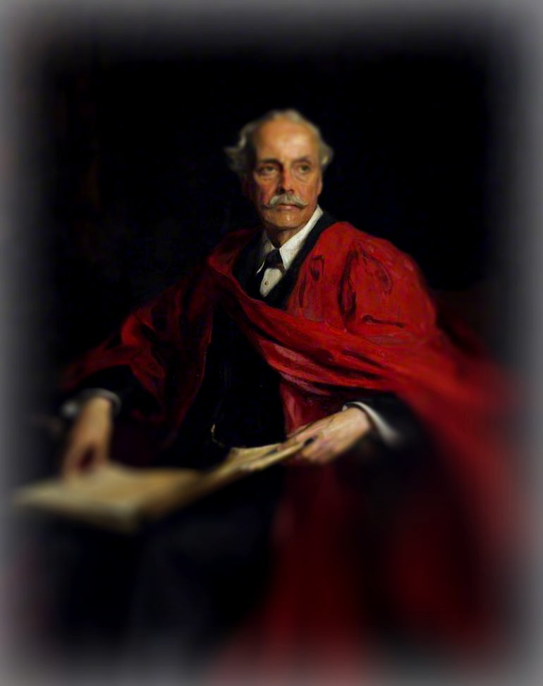

It took only twelve blows of a hammer to damage a Renaissance masterpiece. In 1972, Laszlo Toth, an unemployed geologist, attacked Michelangelo's Pietà, which was on display at St. Peter's Basilica in the Vatican. He struck the sculpture twelve times in quick succession, breaking off the Virgin Mary's nose and leaving a deep gash in her forehead. The scene was one of shock and disbelief. The Vatican Museums immediately began restoration efforts. Conservators spent ten months painstakingly reassembling the sculpture using three fragments of the nose and around 100 additional shards collected from the site. Some experts later remarked that they were lucky—had Toth struck from a slightly different angle, Mary's entire head might have broken off. Since then, the Pietà has been displayed behind bulletproof glass. Toth was declared socially dangerous by a Roman court and committed to a psychiatric hospital. He was released after two years and subsequently deported to Australia.
" data-background-images='["s-1.png","s-2.png"]'> 1974년, 일본 여성 요네즈 토모코는 도쿄 국립박물관에서 전시 중이던 모나리자에 스프레이 페인트를 뿌리려 시도했다. 이 작품은 당시 파리 루브르 박물관에서 일본으로 순회 전시 중이었으며, 엄격한 관람 통제 조치를 도입하고 있었다. 박물관은 관람 인파를 통제하기 위해 휠체어나 목발의 반입을 금지했는데, 이는 당시 장애인 활동가들 사이에서 명백한 차별로 여겨졌다. 요네즈는 이를 능력주의의 상징적 억압으로 간주하며 항의의 표시로 모나리자에 접근했고, 페인트를 뿌리려 했으나 보호 유리 덕분에 대부분 실패했다. 사건 이후 요네즈는 30만 엔의 벌금을 물었고, 일본 사회에서는 이 사건이 장애인의 문화 접근권에 대한 논의를 촉발하는 계기가 되었다. 결국 박물관 측은 장애인을 위한 별도의 관람 일정을 마련해야 했다. 이 사건은 단순한 기물 파손을 넘어, 누구를 위한 예술인지, 예술 공간은 누구에게 열려 있는지에 대한 본질적인 질문을 던졌던 상징적 사례로 남았다.In 1974, Japanese activist Tomoko Yonezu attempted to spray-paint the Mona Lisa during its exhibition at the National Museum of Tokyo, part of a touring show from the Louvre. To manage the crowds, the museum banned the use of wheelchairs and crutches, a policy that disability rights activists saw as blatant discrimination. Outraged by what she saw as a symbol of ableist oppression, Yonezu approached the painting and attempted to spray it. Most of the paint failed to reach the artwork due to protective glass. She was later fined 300,000 yen, and the incident sparked significant media attention in Japan. As a result, the museum was forced to establish special viewing days for visitors with disabilities. This act of protest was not merely an attack on a painting—it became a pivotal moment that questioned the accessibility of cultural spaces and who gets to engage with art on equal terms.
" data-background-images='["s-3.png"]'> 다다이스트 작품의 무정부주의적 정신에 경의를 표하기 위해 적어도 두 명의 예술가가 행동에 나섰다. 그중 한 명인 유명 작곡가 브라이언 에노는 최근에서야 자신이 은밀히 이 작품을 제작해봤다고 밝혔다. 그러나 또 다른 예술가 피에르 피농첼리는 훨씬 더 공개적인 방식으로 작품에 다가섰다. 1993년, 프랑스 님(Nîmes)에서 마르셀 뒤샹의 대표작 샘(Fountain)을 전시하던 중, 그는 그 도자기 소변기에 실제로 소변을 본 뒤 망치로 가격했다. 이 행위로 피농첼리는 한 달간 수감되었고 벌금도 물어야 했다. 하지만 그는 멈추지 않았다. 2006년, 파리 퐁피두 센터에서 열린 다다 예술 서베이 전시에서 또다시 샘을 공격했고, 도자기 조각품은 산산이 조각난 후 복원되었다.At least two artists have taken action to pay tribute to the anarchic spirit of Dadaist art. One of them, the renowned composer Brian Eno, only recently revealed that he had secretly created his own version of the piece. But another artist, Pierre Pinoncelli, approached the work in a far more public and provocative manner. In 1993, during an exhibition of Marcel Duchamp's iconic work Fountain in Nîmes, France, Pinoncelli urinated into the porcelain urinal and then struck it with a hammer. The act landed him in jail for a month, along with a fine. But he wasn't finished. In 2006, during a Dada art survey at the Centre Pompidou in Paris, he attacked the piece once again, shattering the porcelain sculpture, which was later restored.
"> 1990년대 후반, 영국 예술계는 트레이시 에민과 같은 작가들의 등장으로 도발적인 에너지로 들끓었다. 그녀의 대표작 마이 베드(1998)는 4일간 실제로 사용했던 침대 위에 버려진 콘돔, 보드카 병, 더럽혀진 속옷 등이 그대로 놓여 있는 설치 작품으로, 시대를 상징하는 문제작으로 평가받았다. 이 작품의 악명은 결국 중국의 퍼포먼스 아티스트 위안카이와 지안쥔시가 작품을 타깃으로 삼는 계기가 되었다. 2000년, 두 사람은 런던 테이트 갤러리에서 진행된 전시 도중 상의를 벗은 채 침대 위로 올라가, 15분간 베개 싸움을 벌이며 중국어로 표현할 수 없는 것을 외쳤다. 그중 한 명은 에민의 속옷을 입으려 바지를 벗었지만, 보안 요원에 의해 저지당했다. 이 퍼포먼스를 트레이시의 침대 위에서 두 벌거벗은 남자 점프라는 자신들의 작품으로 명명한 두 예술가는 곧장 체포되었지만, 테이트 측이 기소를 거부하면서 곧 석방되었다. 작품은 큰 손상 없이 원래 상태로 복구되었다.In the late 1990s, the British art scene was charged with provocative energy, fueled by artists like Tracey Emin. Her iconic work My Bed (1998)—an installation featuring a bed she had actually used for four days, complete with discarded condoms, vodka bottles, and soiled underwear—came to represent the bold spirit of the era. The notoriety of the piece eventually led Chinese performance artists Yuan Cai and Jian Jun Xi to target it. In 2000, during an exhibition at London's Tate Gallery, the two men—shirtless—climbed onto the bed and engaged in a 15-minute pillow fight, shouting what they described as something that cannot be expressed in Chinese. One of them even attempted to wear Emin's underwear, which was part of the installation, but was stopped by security before he could do so. The two artists titled their intervention Two Naked Men Jumping on Tracey's Bed, claiming it as their own performance piece. Although they were promptly arrested, the Tate declined to press charges, and both were released shortly afterward. The artwork was restored to its original state without major damage.
" data-background-images='["s-4.png","s-5.png"]'> 6세기로 거슬러 올라가는 바미얀 대불은 오랫동안 아프가니스탄에서 가장 중요한 예술 작품 중 하나로 여겨졌다. 높이가 100피트를 훌쩍 넘는 이 거대한 불상은 절벽을 따라 조각되어 있었고, 한때 화려한 벽화들로 둘러싸여 있었다. 그러나 2001년, 탈레반 정권이 이 불상을 파괴하면서 유산은 사실상 사라지고 말았다. 탈레반은 폭약, 삽, 망치 등을 동원해 이 기념비적인 조각상을 서서히 무너뜨렸고, 이를 우상 숭배의 상징이자 반란의 신으로 간주하며 제거하려 했다고 주장했다. 당시 탈레반의 정보부 장관은 언론과의 인터뷰에서 건설보다 파괴가 훨씬 쉽다고 말하며 이 행위를 정당화했다.The Bamiyan Buddhas, dating back to the 6th century, were long considered among Afghanistan's most significant works of art. Towering well over 100 feet, these monumental statues were carved into the side of a cliff and once surrounded by vibrant murals. However, in 2001, the Taliban regime effectively destroyed the statues in a calculated act of demolition. Using explosives, pickaxes, and hammers, the group gradually reduced the Buddhas to rubble, claiming the figures represented idols and gods of rebellion that needed to be eliminated. Justifying the destruction, the Taliban's Minister of Information told the media, It is easier to destroy than to build.
"> 카타르 사막 한가운데 설치된 리처드 세라의 동서/서동 (2014)은 미니멀리즘 애호가들의 성지이자, 수년간 반복적으로 작품에 태그를 남긴 훼손자들의 표적이 되었다. 카타르 정부는 이러한 스프레이 페인팅 문구의 구체적인 내용을 공개하지 않았지만, 2018년 CNN 보도에는 2017년 카타르에 가해진 제재와 관련해 정치적으로 민감한 카타르 민족주의 메시지가 담긴 낙서 사진이 포함되었다. 2020년 말, 카타르 당국은 해당 작품이 다시 훼손되었으며, 가해자들을 법적으로 처벌할 예정이라고 발표했다. 이후 2021년 초, 이 사건과 관련하여 6명이 체포되었다.Located in the heart of the Qatari desert, Richard Serra's East-West/West-East (2014) became both a pilgrimage site for minimalism enthusiasts and a repeated target for vandals who left their marks on the work over the years. While the Qatari government did not disclose the specific content of the spray-painted graffiti, a 2018 CNN report included photos showing politically sensitive messages of Qatari nationalism, in light of the sanctions imposed on Qatar in 2017. In late 2020, Qatari authorities announced that the work had been vandalized again and stated their intention to prosecute the offenders. In early 2021, six individuals were arrested in connection with the incident.
" data-background-images='["s-6.png"]'> 찾기 어려운 거리 예술가 뱅크시는 예상치 못한 장소에서 깜짝 예술 작품을 선보이기로 잘 알려져 있었지만, 그가 벌인 가장 도발적인 행위는 자신의 작품을 직접 파손했을 때 나왔다. 2006년작 풍선을 든 소녀는 2018년 런던 소더비 경매에 나와 110만 파운드(약 140만 달러)에 낙찰되었다. 망치 소리가 울린 직후, 그림은 액자 아래로 미끄러져 내려가며 부분적으로 잘려 나간 것처럼 보였다. 경매장 관계자들은 충격을 받은 듯한 반응을 보였지만, 이 퍼포먼스를 사전에 인지했는지는 명확히 밝혀지지 않았다. 소더비 유럽 현대미술 책임자 알렉스 브랜치크는 방금 뱅크시가 우리를 편집한 것 같다고 말하며, 이 작품이 이제 완전히 다른 형태로 존재하게 되었음을 밝혔다. 이후 뱅크시는 이 작품의 새 제목을 사랑은 쓰레기통에 있습니다라고 명명했다.Elusive street artist Banksy was long known for unveiling surprise artworks in unexpected locations, but his most provocative gesture came when he destroyed one of his own pieces. His 2006 work Girl with Balloon was sold at a Sotheby's auction in London in 2018 for £1.1 million (about $1.4 million). Just moments after the gavel fell, the artwork appeared to slip through the frame and become partially shredded. While auction staff reacted with apparent shock, it remained unclear whether the stunt had been prearranged. Alex Branczik, Sotheby's head of contemporary art in Europe, remarked, It appears we just got Banksy-ed, and acknowledged that the piece had been transformed into an entirely different artwork. Banksy later retitled it Love is in the Bin.
" data-background-images='["s-9.png","s-8.png"]'> 2023년 10월 하마스의 공격 이후 이스라엘의 가자지구 군사 작전이 이어지는 가운데, 전 세계 예술계에서도 친팔레스타인 시위가 번져나갔다. 기억에 남는 사건 중 하나는 영국 트리니티 칼리지에서 일어났다. 팔레스타인 액션 소속의 한 활동가가 필립 알렉시우스 드 라슬로가 1914년에 그린 아서 밸푸어의 초상화를 스프레이 페인트로 훼손하고 칼로 그은 것이다. 밸푸어는 팔레스타인에 유대인을 위한 민족적 고향을 조성하겠다는 계획의 기틀을 마련한 영국 정치인이다. 영국 경찰은 이 사건에 대한 수사에 착수했지만, 그 결과는 아직 공개되지 않았다.Amid Israel's military operations in Gaza following the Hamas attack on October 7, 2023, pro-Palestinian protests swept through the art world. One notable incident took place at Trinity College in England, where an activist from the group Palestine Action spray-painted and slashed a 1914 portrait by Philip Alexius de László. The painting depicted Arthur Balfour, a British politician who laid the groundwork for what he described as a national home for the Jewish people in Palestine. British police launched an investigation into the vandalism, but the results have yet to be made public.
" data-background-images='["s-10.png"]'> 이 사건은 1914년 영국 런던에서 발생했다. suffragette(여성 참정권 운동가)였던 메리 리처드슨(Mary Richardson)은 런던 내셔널 갤러리에 전시 중이던 디에고 벨라스케스의 그림 로커비의 비너스(Rokeby Venus)를 칼로 훼손했다. 그녀는 여성 참정권 운동의 지도자였던 에멀린 팽크허스트(Emmeline Pankhurst)가 버킹엄 궁전 앞 시위 도중 체포된 것에 분노해 이 행동을 벌였다. 리처드슨은 이를 정부가 가장 아름다운 현대 인물인 팽크허스트 여사를 파괴했기에, 나는 신화 속 가장 아름다운 여인을 파괴하려 했다고 밝혔다. 그녀는 그림의 엉덩이와 등에 상처를 입혔고, 이로 인해 내셔널 갤러리는 복구 작업을 위해 2주간 폐쇄되었다. 리처드슨은 이 사건으로 6개월 형을 선고받았으나, 수감 중 단식 투쟁을 벌였고 몇 주 만에 조기 석방되었다.In 1914, Mary Richardson vandalized Diego Velázquez's Rokeby Venus at the National Gallery in London. She committed this act to protest the arrest of Emmeline Pankhurst, a leader of the women's suffrage movement. Richardson stated that since the government had destroyed Pankhurst, the most beautiful character in modern history, she would destroy the most beautiful woman in mythological history. She slashed the painting across Venus's hip and back. The National Gallery closed for two weeks to restore the damaged painting. Richardson was sentenced to six months in prison. While imprisoned, she went on a hunger strike and was released after only a few weeks.
" data-background-images='["s-11.png","s-12.png"]'>